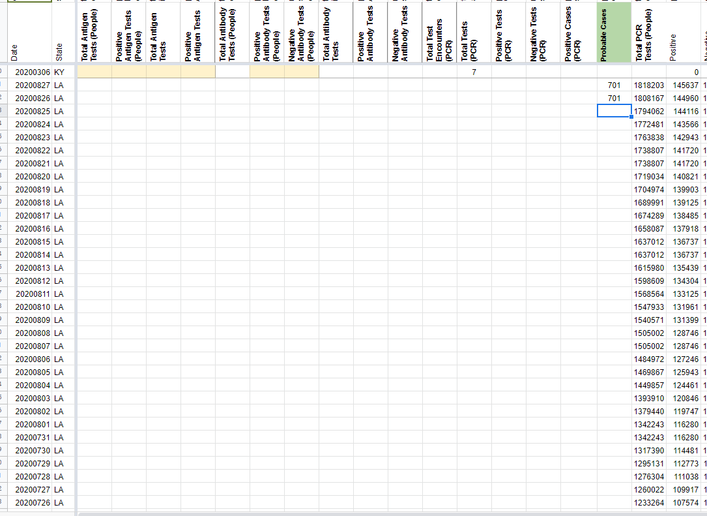
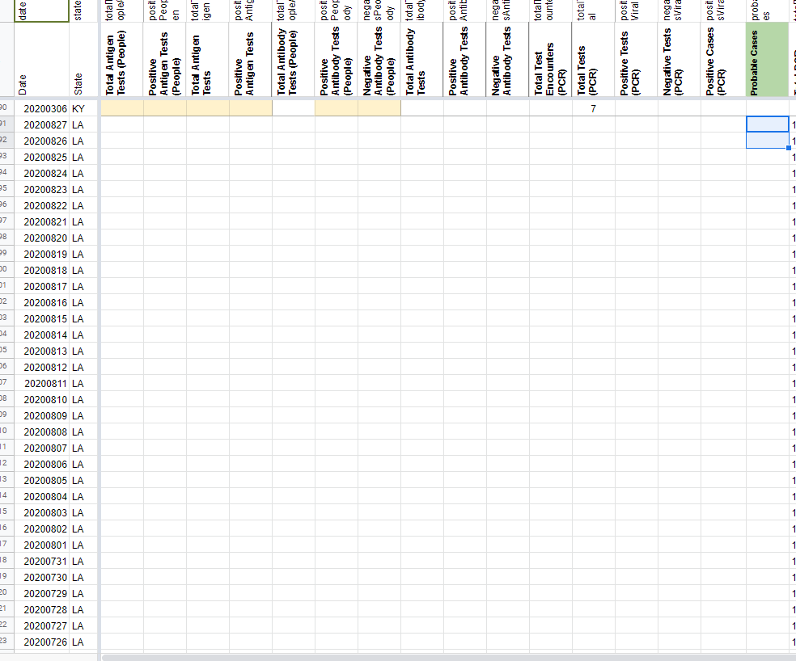
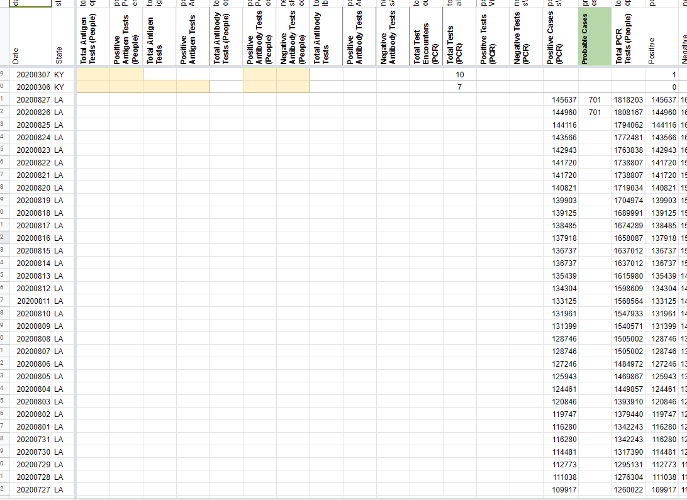
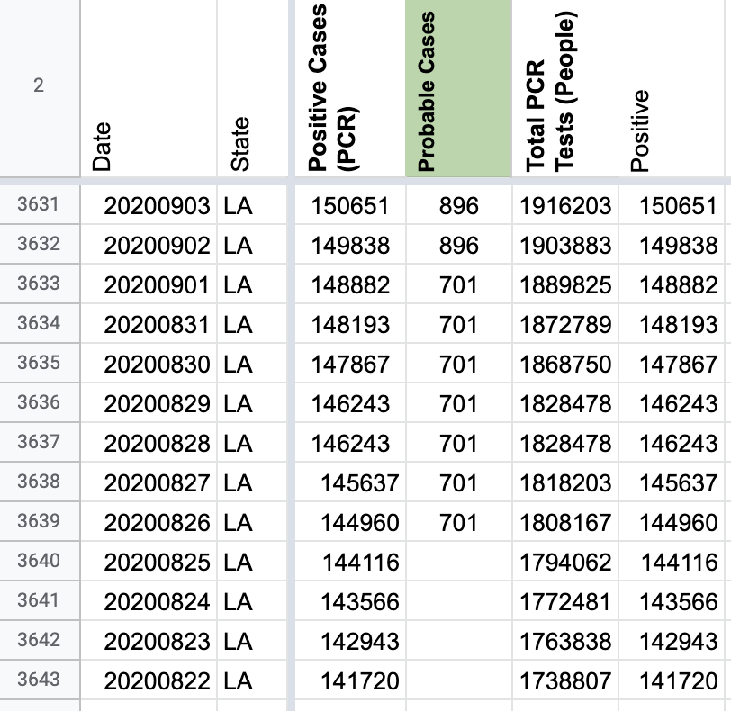
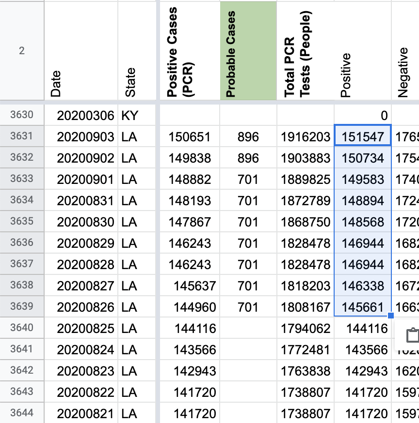
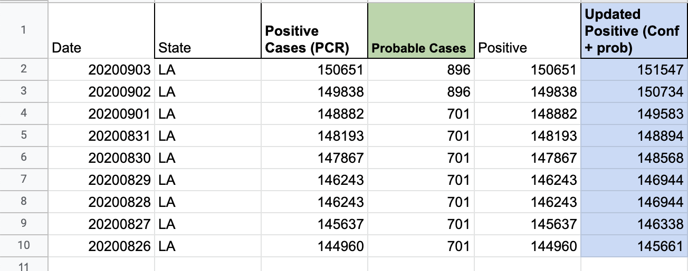
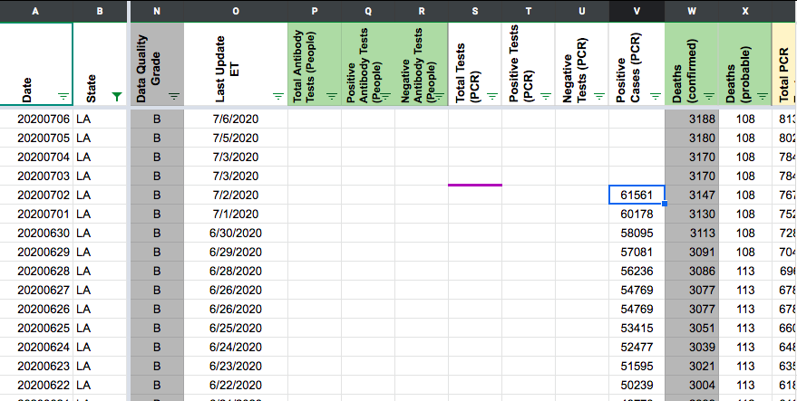
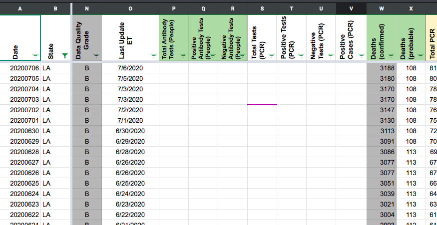
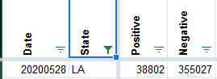
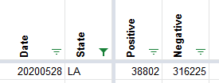

| Date | Number | Title |
|---|---|---|
| December 3, 2020, 12:45 PM PST | 994 | [LA] move people timeseries to specimens |
| August 28, 2020, 6:54 AM PDT | 798 | [LA] Back-fill probable cases for 8/26 & 8/27, Copy Positive to Positive Cases (PCR), update Positive to include Confirmed plus Probable |
| August 5, 2020, 12:02 PM PDT | 736 | [GA] [LA] Negative Values for number of "New Tests" |
| July 1, 2020, 6:31 AM PDT | 562 | [LA] Cases - PCL Historicals and WS2 |
| May 28, 2020, 10:52 PM PDT | 465 | [LA] Negatives reported same as total on 28-May |
#994: [LA] move people timeseries to specimens
Issue number 994
karaschechtman opened this issue on December 3, 2020, 12:45 PM PST
Labels Data quality
State or US: LA
Describe the problem LA's total tests are stored in people, but we had made that classification based on information that appeared to only pertain to LTC. LA's language has always been in terms of "tests" and the numbers seem to indicate specimens compared to HHS data, and based on test positivity. We are going to move this to specimens, consistent with the way we've treated other states that use similar language.
Link to data source Our own people timeseries
Comments
#798: [LA] Back-fill probable cases for 8/26 & 8/27, Copy Positive to Positive Cases (PCR), update Positive to include Confirmed plus Probable
Issue number 798
muamichali opened this issue on August 28, 2020, 6:54 AM PDT
Labels Data quality
State or US: Louisiana
Describe the problem As of 8/26, Louisiana is reporting probable cases on their dashboard. CTP will start capturing them today.
- Backfill the values for 8/26 and 8/27
- LA's data dictionary now confirms explicitly that reported cases are lab confirmed via a PCR test, so we should copy the cases numbers we captured previously into the
Positive Cases (PCR)column - Add the probable values to the confirmed values in our Total cases (
positive) metric.
Link to data source


Comments
BEFORE - 1  BEFORE - 2  AFTER 
Updating Total cases (positive):
BEFORE: 
AFTER: 
Sources: screenshot 8/26, screenshot 9/3, 
{kind=link}
{kind=link}
#736: [GA] [LA] Negative Values for number of "New Tests"
Issue number 736
Stayerbear opened this issue on August 5, 2020, 12:02 PM PDT
Labels Historical Data stale
State or US: Georgia, Louisiana
Describe the problem GA has -74,189 new tests on May 27. All quantity of tests should be a positive value. LA has -2,651 new test on April 19. Negative values have caused the 7-day average to scale to 300% make the rest of the 7-day average a flat line at the bottom.
Link to data source https://coronavirus.jhu.edu/testing/individual-states/georgia https://covidtracking.com/data/state/georgia#historical https://covidtracking.com/data/state/louisiana#historical
Comments
This issue has been automatically marked as stale because it has not had recent activity. It will be closed if no further activity occurs. Thank you for your contributions!
I missed DC... it also has -11,188 on May 25.
This issue has been automatically marked as stale because it has not had recent activity. It will be closed if no further activity occurs. Thank you for your contributions!
This issue has been closed because it was stale for 15 days, and there was no further activity on it for 10 days. You can feel free to re-open it if the issue is important, and label it as "not stale."
#562: [LA] Cases - PCL Historicals and WS2
Issue number 562
qpmnguyen opened this issue on July 1, 2020, 6:31 AM PDT
Labels PCL/SVP Historicals
Cases reported in LA were not clear as to whether they're confirmed. However, this value was reported in the confirmed column Positive Cases (PCR) on WS2 from 4/22 - 6/30. Historicals and WS2 needs to be corrected to reflect this annotation.
Comments
BEFORE 
AFTER - Corrected to remove values from positive cases (PCR), as LA lumps probables and confirmed for cases.

#465: [LA] Negatives reported same as total on 28-May
Issue number 465
space-buzzer opened this issue on May 28, 2020, 10:52 PM PDT
Labels Data quality stale
On 28-May both total and negative were reported as the "total" value, which increased the total reported through the API.
Total from dashboard = 355,027
Negative should be (35,5027 - 38,802) = 316,225
Links: https://covidtracking.com/api/v1/states/LA/20200528.json
Comments
BEFORE 
AFTER 
This issue has been automatically marked as stale because it has not had recent activity. It will be closed if no further activity occurs. Thank you for your contributions!
This issue has been closed because it was stale for 15 days, and there was no further activity on it for 10 days. You can feel free to re-open it if the issue is important, and label it as "not stale."
Looks like I fixed is already but forgot to close the ticket. Thanks, stale bot!
Changes (4).txt